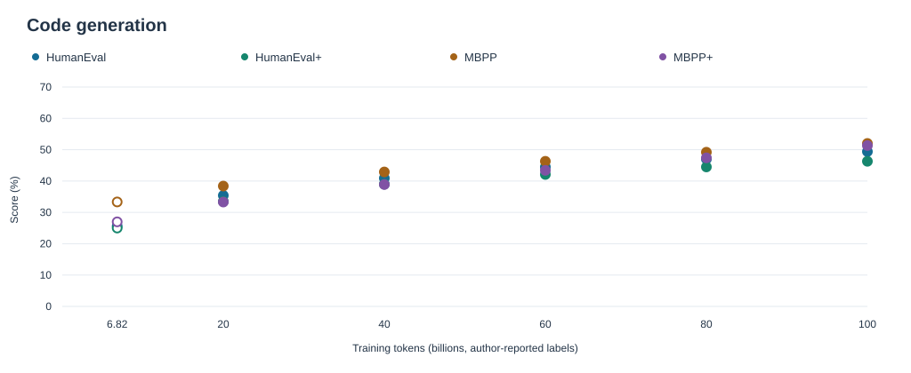
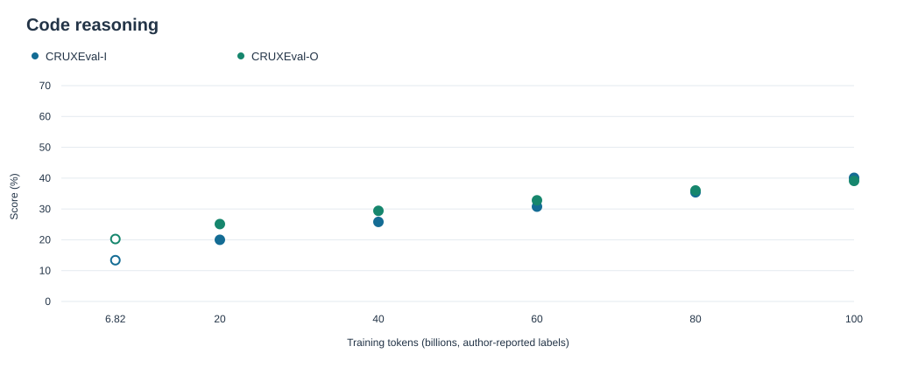
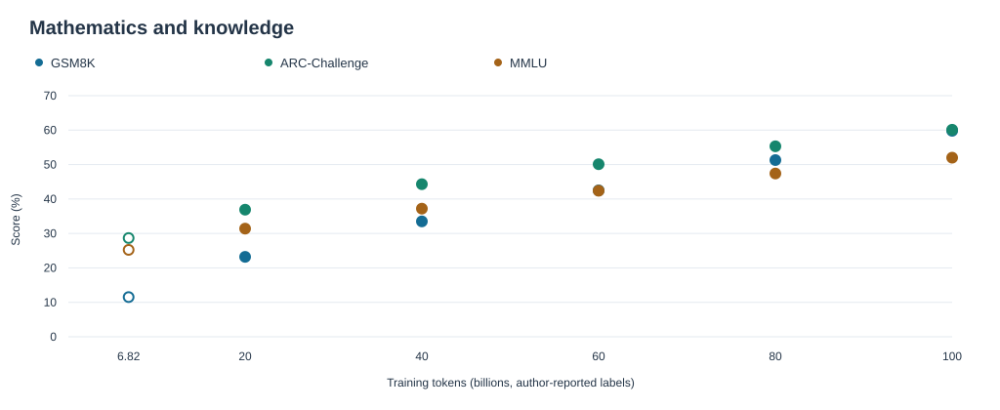

Points are reported measurements. Hollow: archived early outputs. Filled: author-confirmed later results. No fitted curves.
A checkpoint-by-checkpoint view of code generation, code reasoning, mathematics and knowledge.
Author-confirmed measured results, with archived evidence linked separately. Weights are not hosted in this repository.
54 primary measurements. Percentages retain their reported precision.
| Benchmark | 6.82B | 20B | 40B | 60B | 80B | 100B |
|---|---|---|---|---|---|---|
| HumanEval | 25.61 | 35.4 | 40.9 | 44.5 | 47.0 | 49.4 |
| HumanEval+ | 25.00 | 33.5 | 39.0 | 42.1 | 44.5 | 46.3 |
| MBPP | 33.33 | 38.4 | 42.9 | 46.3 | 49.2 | 52 |
| MBPP+ | 26.98 | 33.3 | 38.9 | 43.4 | 47.4 | 51.3228 |
| CRUXEval-I | 13.38 | 20.0 | 25.8 | 30.750 | 35.4 | 40.1 |
| CRUXEval-O | 20.25 | 25.1 | 29.4 | 32.8 | 36.0 | 39.1 |
| GSM8K | 11.52 | 23.2 | 33.5 | 42.5 | 51.3 | 59.8 |
| ARC-Challenge | 28.67 | 36.9 | 44.3 | 50.1 | 55.3 | 60.1 |
| MMLU* | 25.23 | 31.4 | 37.2 | 42.4 | 47.4 | ≈52.0 |
* The early MMLU anchor uses MC5. Later MMLU evaluator manifests are not supplied; no cross-protocol equivalence is asserted. The 100B value remains approximate.
MBPP at 100B is reported as 52% at integer precision. CRUXEval-I at 60B is 30.750%; MBPP+ at 100B is 51.3228%.
The 6.82B token label is rounded. The early row links to archived outputs; later rows are author-confirmed measurements whose raw outputs are not attached to this release.
Grouped by capability. Tables above are the exact numeric reference; plots do not establish controlled comparability across unarchived protocols.

Points are reported measurements. Hollow: archived early outputs. Filled: author-confirmed later results. No fitted curves.

Points are reported measurements. Hollow: archived early outputs. Filled: author-confirmed later results. No fitted curves.

Points are reported measurements. Hollow: archived early outputs. Filled: author-confirmed later results. No fitted curves.
The systems measurements below belong to the 9 October archive, not the full 100B run.
MFU is the implementation's model-FLOP estimate. Medians use at most the last 100 retained observations and exclude unlogged downtime.
System metrics and raw curves ↗Model architecture · Training and optimization · Evaluation
Data filtering and packing · Tokenizer · Model card
The original weighted source mixture is archived. Revised mixing weights and their change points have not been supplied for this release.
Original data mixture ↗All milestone values are author-confirmed measurements. Six explicit corrections are retained in the source JSON. Reported precision, approximate values and missing protocol fields are preserved.
This publishing step validates consistency and builds pages; it does not rerun model evaluation or manufacture per-example logs.
The existing 607 archived metric rows, 13 checkpoint entries, evaluator versions, training traces and source hash inventories remain available in their original paths.
MMLU-CF: 28.57% at the early milestone; no later CF result is supplied.